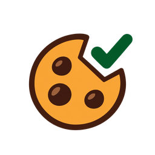

只在浏览器本地工作
不建账号，不接服务器，不上传浏览记录。

COOKIE CONSENT, TRIMMED.
饼干退退退 🍪
把反复弹出的 Cookie 横幅，尽量自动切到“仅必要”。
A tiny browser extension that prefers necessary cookies.
01 / 不想再点第 800 次
CookieTrim 会识别常见的 Cookie 同意横幅，优先点击“仅必要”“拒绝非必要”或同等选项。它不是广告拦截器，也不会替你删除登录状态。
不同网站的按钮和规则会变化，无法保证覆盖所有页面；遇到关键网站时，请以页面实际选择为准。
02 / 安全说明
不建账号，不接服务器，不上传浏览记录。
不追踪你访问过哪些网站，也不出售数据。
核心规则、权限和处理逻辑都能在仓库中查看。
页面访问权限用于识别和操作 Cookie 横幅。
03 / 安装
小红书小工具不能跳转外部链接。请在 GitHub 里搜索下面两项：
请只从项目官方仓库获取版本。浏览器商店版本是否上线，请以仓库说明为准。
04 / ENGLISH
CookieTrim is a free, open-source, non-profit browser extension made by an individual developer. It attempts to choose “necessary only” or an equivalent rejection option on common consent banners.
No extension can support every website or promise absolute safety. Review its permissions and source before installation. Search GitHub for CookieTrim by rinrin583.
分享素材